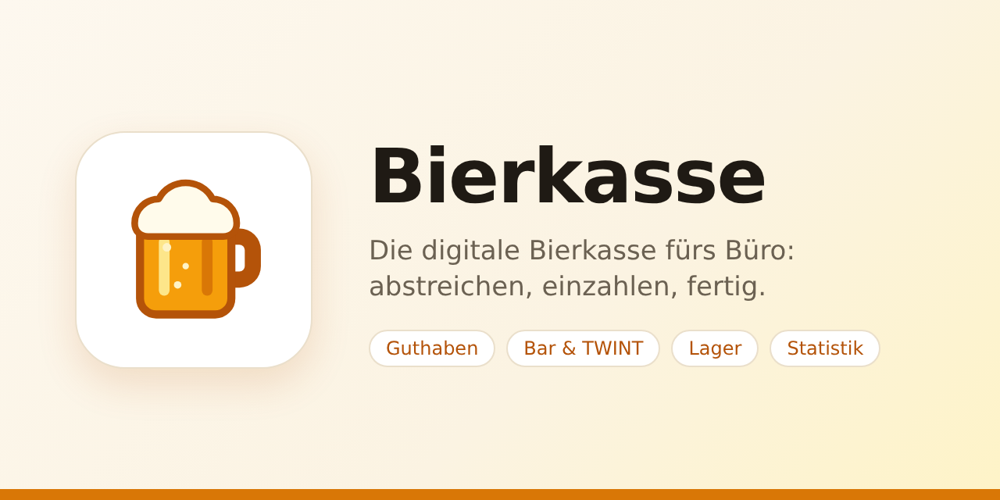
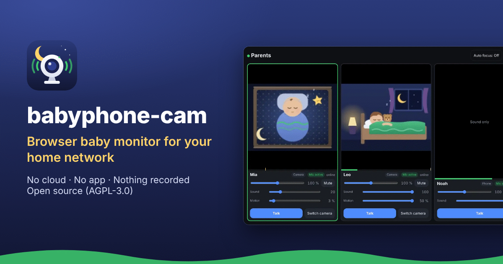
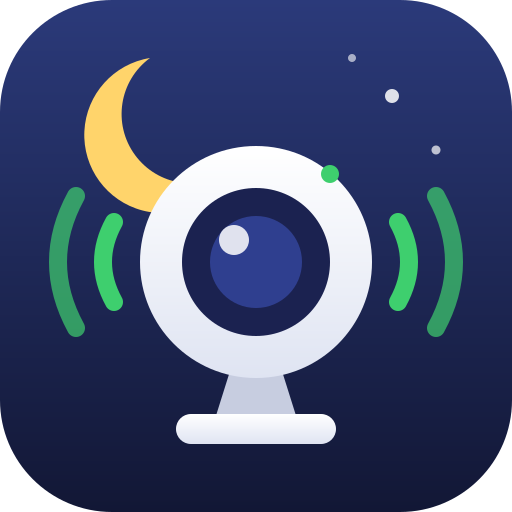
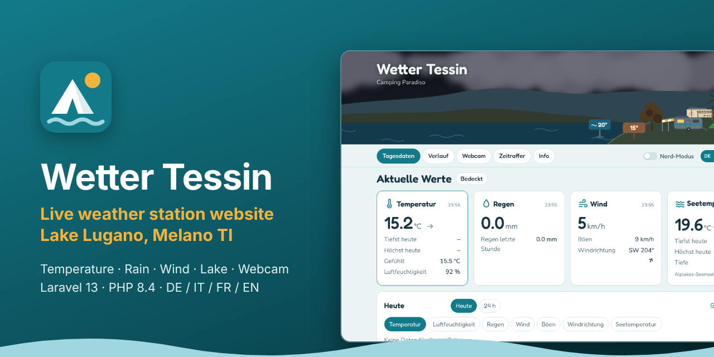
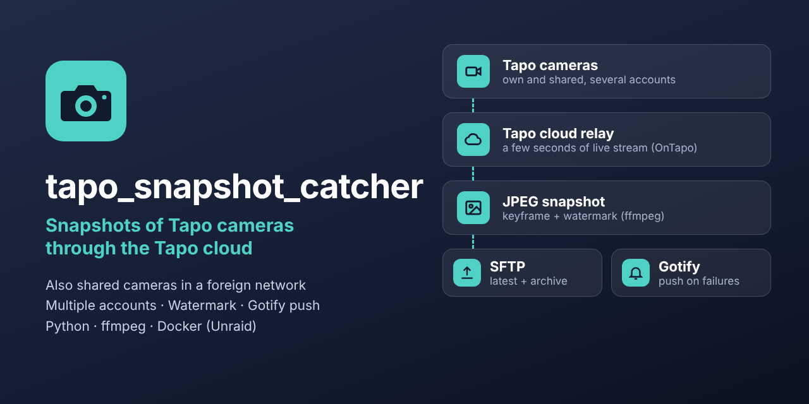
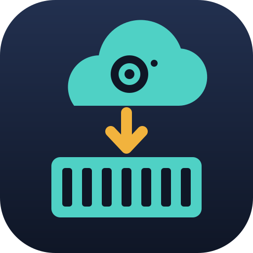

Gemacht für Unraid
Zwei hilfreiche Werkzeuge für deinen Heimserver
Das eine teilt Text und Dateien zwischen deinen Geräten, das andere unterstützt dich bei der Serveradministration. Nimm das, was du brauchst — oder beide.
-


Instant-Share fürs Heimnetz — wie AirDrop, nur für jedes Gerät und jedes System.
- Text, Dateien oder einen Screenshot hineinziehen — und es ist sofort auf jedem anderen Gerät.
- Alles im Browser: keine App zum Installieren, kein Login, keine Cloud.
- Ein Docker-Container auf deinem eigenen Server, in 17 Sprachen.
-


Ein ganzes Team unterstützt dich bei deiner Serveradministration — zehn Figuren, jede kümmert sich um einen Teil davon.
- Herr Backupsi sichert nach deinem Zeitplan, mit Kopia verschlüsselt auch ausser Haus; Herr Restori holt Apps, VMs, ganze Shares oder einzelne Dateien von überall zurück, wo eine Kopie liegt, und übt es regelmässig; ein Partner-Server bewahrt deine Kopien auf, auf Wunsch über das eigene Tailscale-Netz des Sekretariats; Frau Snapshotini führt die Snapshots.
- Frau Moverelli hält den Pool schnell und aufgeräumt, Jack Streamer legt bereit, was als Nächstes in Emby, Jellyfin und Plex läuft.
- Der Nachtwächter macht alle fünf Minuten seinen Rundgang, Frau Protokolli bringt alle Protokolle an einen Ort, Frau Putzteufel räumt weg, was niemand mehr braucht.
- Der Teamchef schlägt vor, wen du einstellst, der Berater installiert mit dir, was fehlt — ein Plugin für Unraid 7.3.2 oder neuer, hinter Unraids Login.


Aus der Nachbarschaft
Nicht von dropnook, aber aus derselben Ecke.

Auf helminet.ch findest du die Projekte von helmi1987, welche ich unterstütze — schau mal rein!
-

bierkasse
Die Bierkasse fürs Büro, digital statt Strichliste und Münzdose: Bier abstreichen, Guthaben bar oder per TWINT aufladen, der Kassier bestätigt — mit Lagerstand und Statistik, als App auf dem Handy.
-


babyphone-camEin Babyphone im Browser fürs Heimnetz: Kamera und Mikrofon direkt im Browser, ein Docker-Container — keine App, keine Cloud, nichts wird aufgezeichnet.
-

wettertessin_homepage
Die Wetterstation vom Camping Paradiso in Melano am Luganersee: Temperatur, Regen, Wind, Seetemperatur und Webcam — auf Deutsch, Italienisch, Französisch und Englisch.
-
helminet_webpage
Die Seite hinter helminet.ch selbst: eine Linksammlung für eigene und unterstützte Projekte, mit GitHub-Abgleich, Logos, Besucherstatistik und Kontaktformular.
-


tapo_snapshot_catcherHolt Schnappschüsse deiner Tapo-Kameras, auch von geteilten, über die Tapo-Cloud und lädt das neueste Bild samt Archiv per SFTP hoch. Klemmt etwas, meldet sich Gotify.
-
 ansible_mikrotik_fullbackup
ansible_mikrotik_fullbackupEin Ansible-Playbook, das von deinen MikroTik-Routern ein vollständiges Backup zieht: Binär-Backup und rsc-Export, über eine RAM-Disk statt über den Flash.
-
 firestorm_mikrotik_dyndns
firestorm_mikrotik_dyndnsEin DynDNS-Skript für MikroTik RouterOS: Hält den A-Record deiner Domain bei FireStorm auf der aktuellen WAN-IP — und fragt die API nur, wenn sich wirklich etwas geändert hat.
-
 firestorm_certwarden
firestorm_certwardenZwei Skripte für Cert Warden: Let's-Encrypt-Zertifikate per DNS-01-Challenge für Domains, die bei FireStorm gehostet sind — ausgestellt und erneuert, ohne dass ein Port offen sein muss.
-
 gotify-bark
gotify-barkEin Gotify-Plugin, das deine Nachrichten an Bark aufs iPhone weiterreicht. Die Priorität entscheidet, ob es still ankommt oder als Critical Alert durchbricht — und zu lange Nachrichten werden gekürzt statt verschluckt.
-
SoundTouch
PowerShell-Skripte für SoundTouch-Lautsprecher — ein älteres Projekt aus dem Jahr 2016.